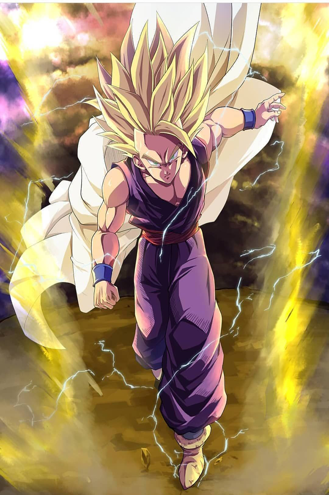
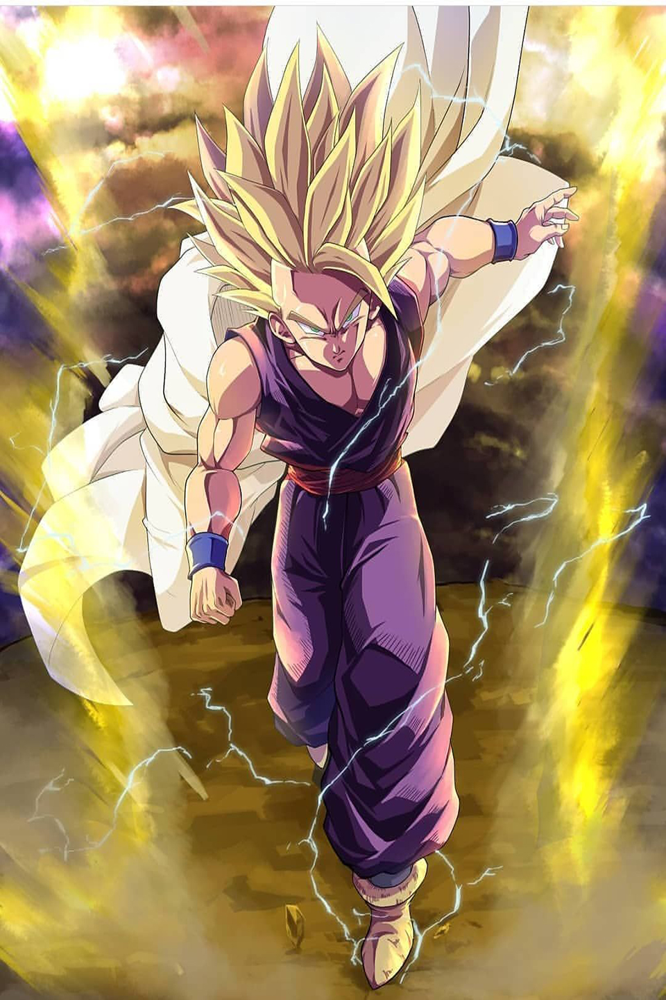

Natsu Dragneel (ナツ・ドラグニル Natsu Doraguniru) is a Mage of the Fairy Tail Guild,
wherein he is a member of Team Natsu. He is the younger brother of Zeref Dragneel,
having originally died 400 years ago, being subsequently revived as his brother's most
powerful Etherious: E.N.D. (ＥＮＤイーエヌディー Ī Enu Dī).Natsu is also among the five Dragon
Slayers sent to the future from four hundred years past, having an additional purpose in the
assistance of the defeat of Acnologia.
 
